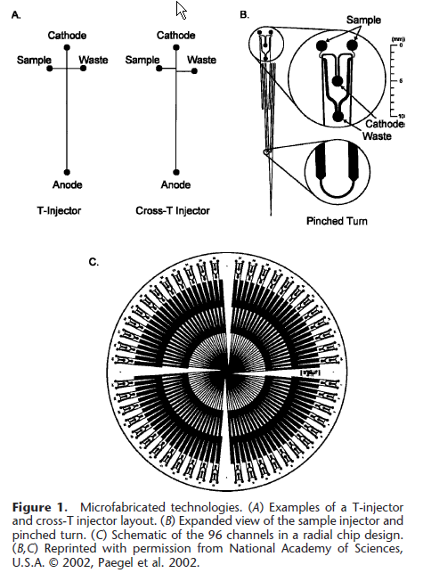
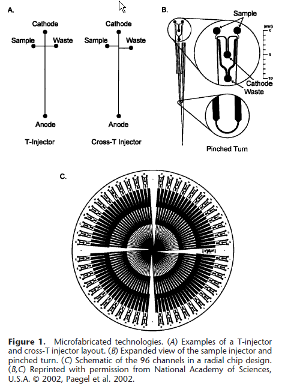
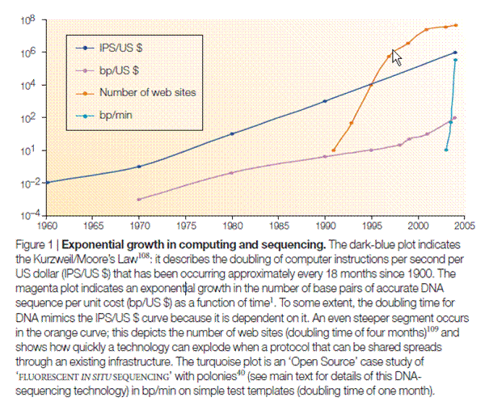
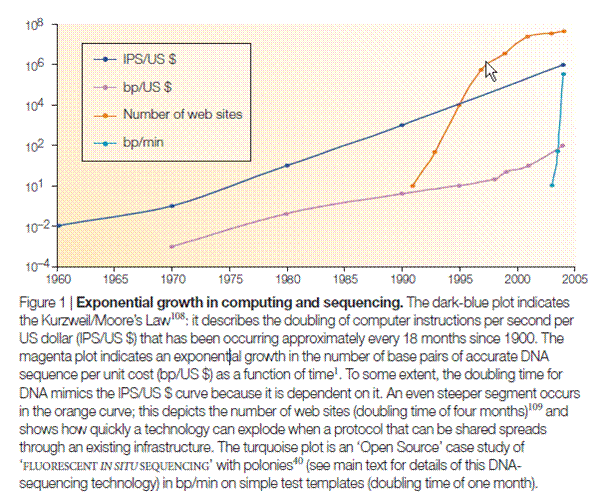

# Step 1: scale down
# Step 1: scale down  # Step 2: scale up
# Step 2: scale up  # Step 3: scale down ## Enter the age of microdevices  ## Microfluidics approach #1: flow cell Good: repeat sequences Bad: fancy chemistry! ## Microfluidics approach #3: pyro-sequencing Good: light = cheap Bad: repeat sequences ## The DNA chip Good: $experiment = $cpu Bad: $experiment = $cpu # The result? ## Moore's Law
# Step 3: scale down ## Enter the age of microdevices  ## Microfluidics approach #1: flow cell Good: repeat sequences Bad: fancy chemistry! ## Microfluidics approach #3: pyro-sequencing Good: light = cheap Bad: repeat sequences ## The DNA chip Good: $experiment = $cpu Bad: $experiment = $cpu # The result? ## Moore's Law  ## Moore v.s. DNA 
## Moore v.s. DNA 